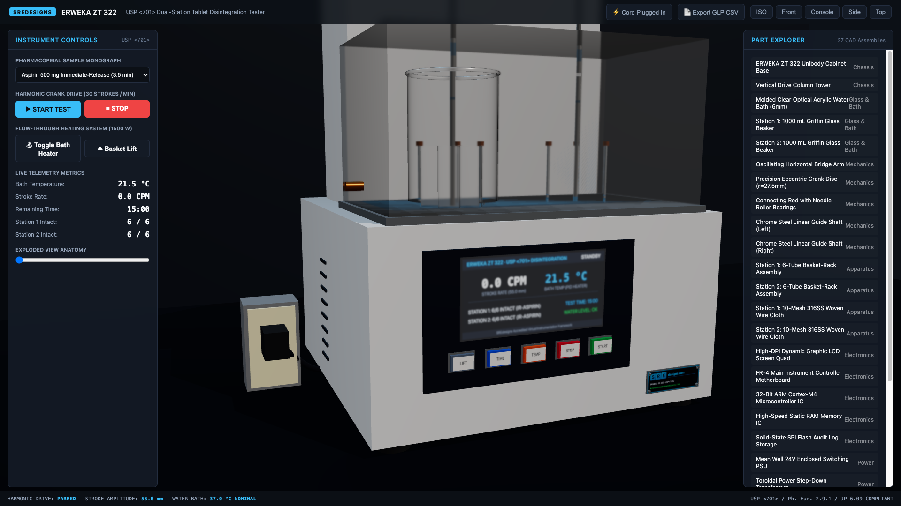
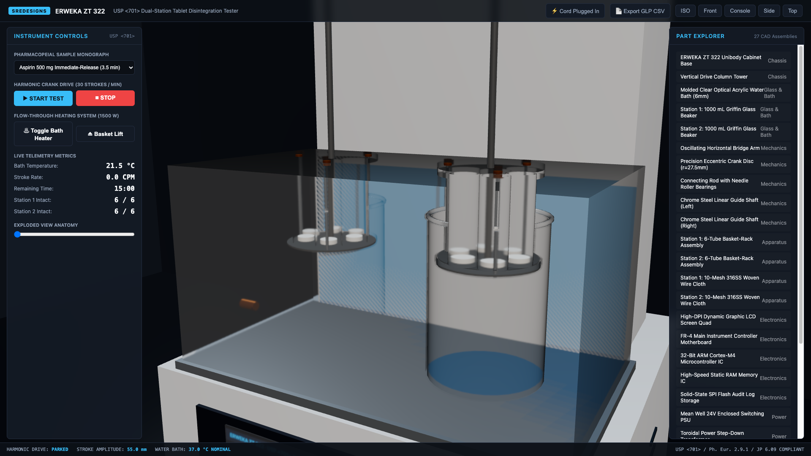
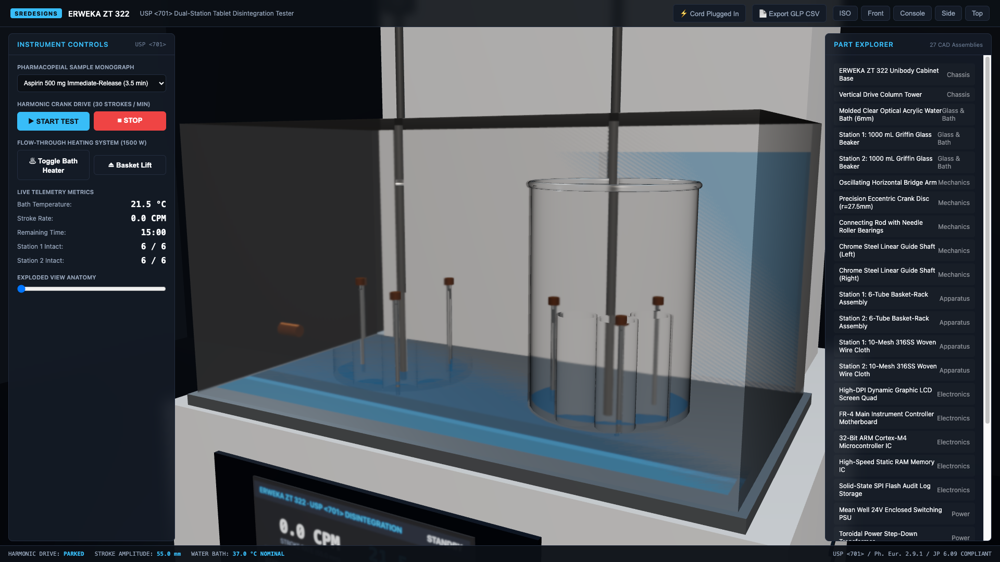
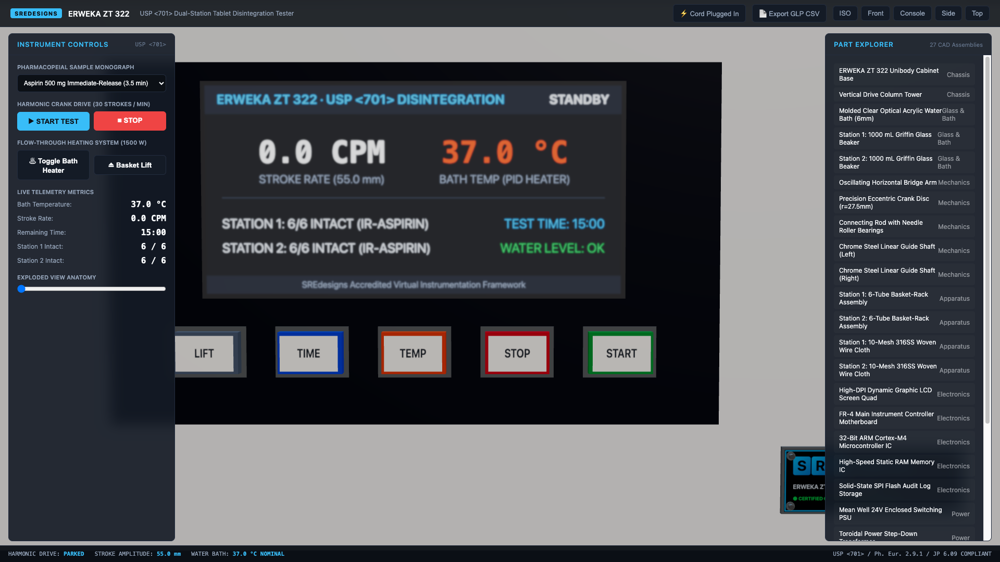
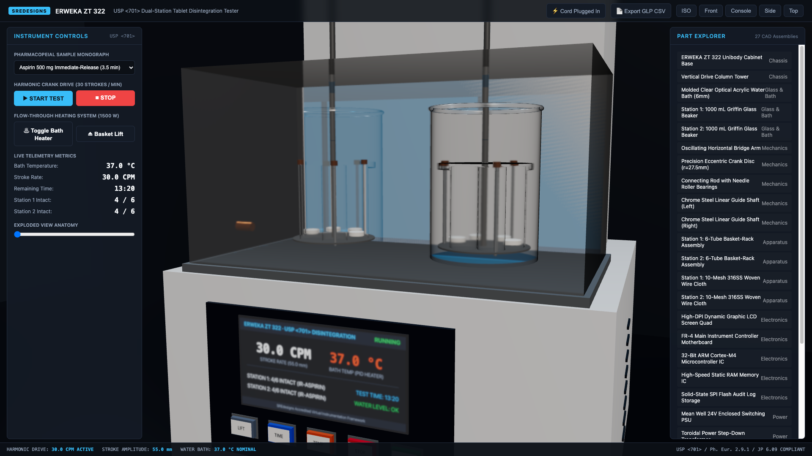
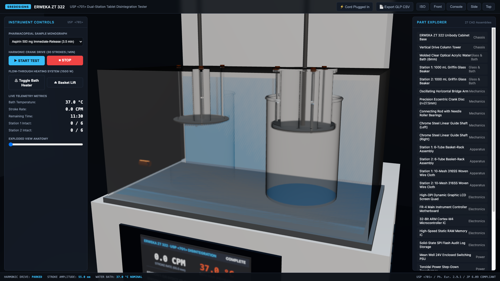
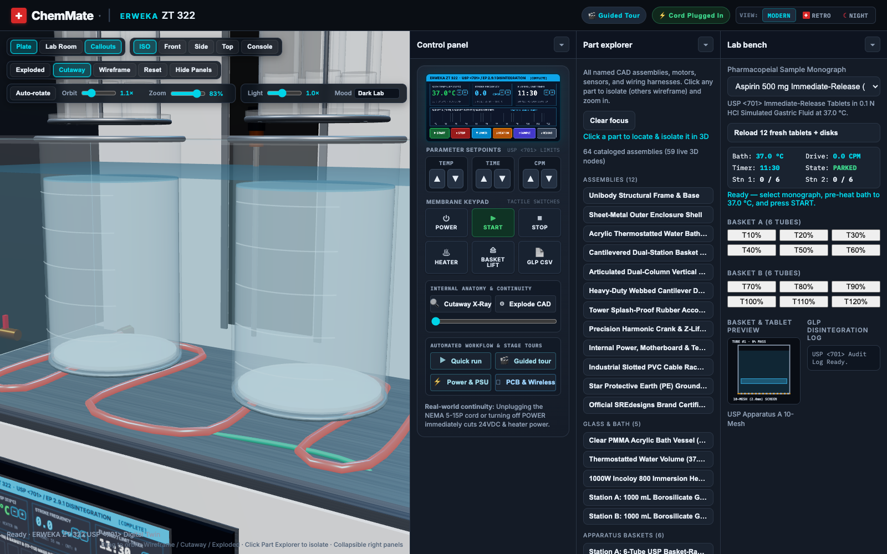
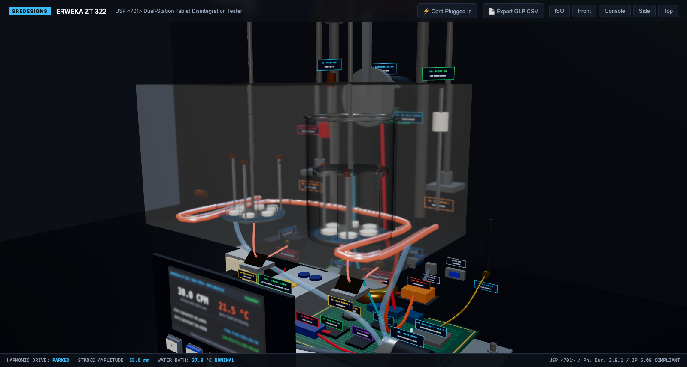
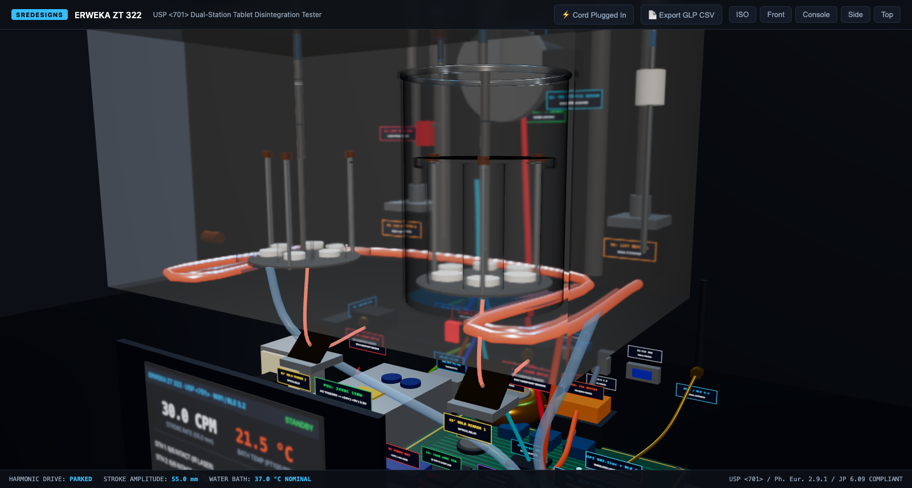
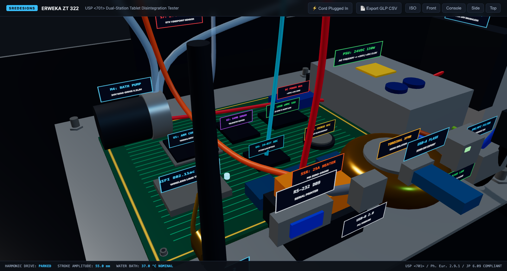

ERWEKA ZT 322 · USP <701> Tablet Disintegration Tester
Complete real-life operator walkthrough with voiceover narration—covering full instrument overview, powering on & hard circuit continuity, water bath & beaker setup, basket insertion & safety interlocks, front control panel setup, 30.0 CPM sinusoidal disintegration physics, end-of-run inspection, and full internal shots of the power supply, color-coded wiring harnesses, all 5 motors, and controller motherboard with data ports.
MICRO 5424-R · High-Speed Refrigerated Centrifuge
Complete real-life operator experience with voiceover narration—covering centrifugal separation principles, electrical continuity & NEMA plug setup, tube balancing, 24-place aerosol-tight rotor loading & dual motorized lid latches, 15,000 RPM (21,130 ×g) run dynamics, parabolic fluid meniscus deformation, whole blood pelleting physics, dynamic electric braking & GLP CSV export, and full internal electromechanical anatomy (switching power supply, toroidal transformer, 3D wiring harnesses, brushless DC drive motor, refrigeration compressor, and ARM Cortex motherboard).

Enforces hard electrical continuity (`isPluggedIn && powerSwitchOn`). Unplugging the SJTOW cord from `Body_Power_Receptacle_Duplex` immediately cuts power (`POWER_OFF`); plugging in wakes `UI_LCD` into `STANDBY`.

Operator fills the 6.5 L acrylic bath, pours 800 mL simulated gastric fluid into dual 1000 mL borosilicate Griffin beakers, and loads 12 tablets and V-grooved fluted guide disks into the raised USP Apparatus A baskets.

Baskets lock into knurled 316SS quick-release collets (`Knob_Collet_QuickRelease_01/02`) and lower into the media while verifying USP immersion depth geometry, low-water float cutoff, and 50 °C thermal protection.

Close-up of `UI_LCD` and tactile membrane buttons (`[START]`, `[STOP]`, `[TEMP]`, `[TIME]`, `[LIFT]`). Selecting the Aspirin IR monograph and engaging the 1500 W PID heater warms the bath to 37.0 ± 0.5 °C.

Pure harmonic reciprocation (`y(t) = 27.5 sin(πt) mm`, 55.0 mm stroke) drives laminar gastric fluid through the 10-mesh (2.0 mm) screens as superdisintegrant swelling breaks apart tablets and updates live LCD counters.

Upon complete disintegration (`0/6 Intact`), the drive halts at TDC, sounds a completion chime, raises the baskets for visual inspection of the empty 10-mesh screens, and exports the timestamped GLP CSV audit trail.

Visualizes the IEC C14 inlet, DPST breaker, Schaffner EMI filter, chassis ground lug, 180VA toroidal transformer, Mean Well 24VDC 150W PSU (filter caps + 7-screw barrier strip), Crydom 25A SSR, DC bus, and color-coded 3D wiring harnesses.

Shows M1 (24V BLDC planetary gearmotor + crank), M2 & M3 (dual NEMA 17 basket-lift steppers + TR10x2 stainless lead screws), M4 (magnetic-drive bath pump + silicone hoses + glowing 1500W heater coil), and M5 (80mm cooling blower).

Shows S1 (PT100 RTD bath probe), S2 (TDC optic sensor), S3 (1024-PPR rotary encoder), S4/S5 (lift limit microswitches), S6 (low-water float switch), and S7/S8 (850nm IR lasers bouncing off 45° gold optical relay mirrors beneath both baskets).

Motherboard with U1 (ARM Cortex-M4), U2 (64MB SDRAM), U3 (16GB eMMC SSD), U4 (24-bit ADC), BT1 (CR2032 RTC), U5 (Wi-Fi 802.11ac + BLE 5.2 RF shield + U.FL coax to 2.4GHz dipole antenna), RS-232, USB-B, USB-A 32GB Flash drive & RJ45 LAN.